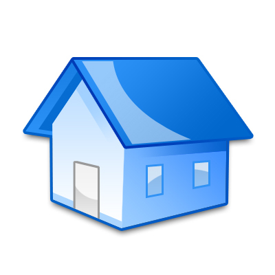
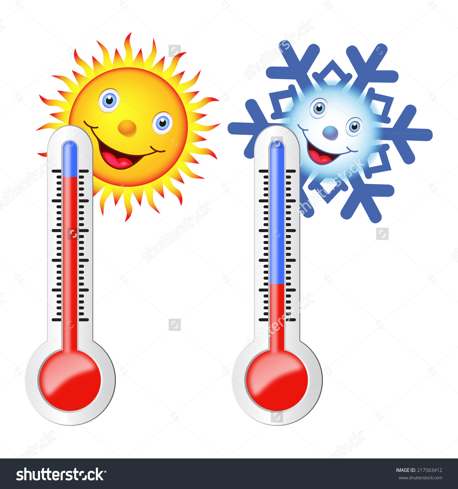
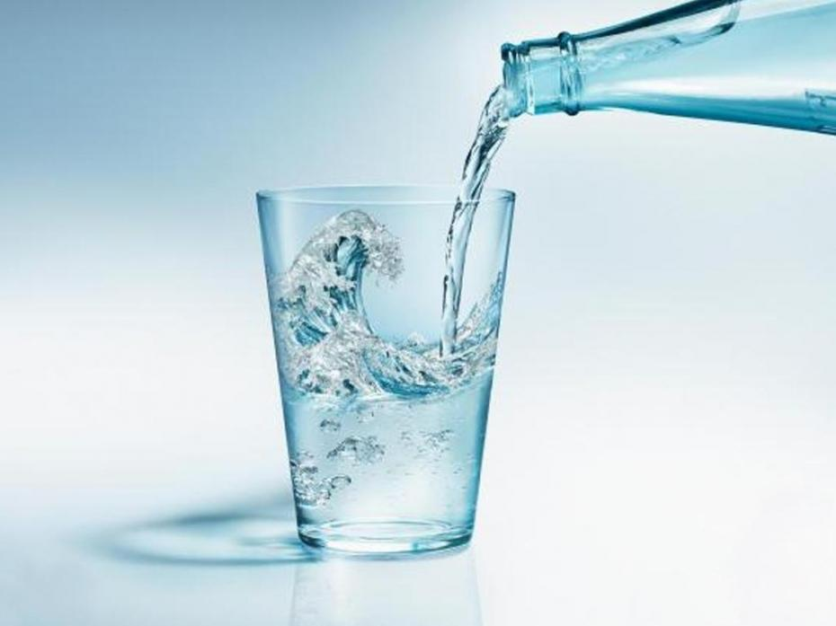

En cas de canicule, préservez votre santé et celle des personnes fragiles qui vous entourent.
[En savoir plus]() sur la politique "Santé et développement" de la Métropole
L'exposition à de fortes chaleurs est une agression pour l'organisme. On risque une déshydratation, l'aggravation d'une maladie chronique ou un coup de chaleur. Certains symptômes doivent alerter : des crampes musculaires au niveau des bras, des jambes, du ventre… plus grave, un épuisement peut se traduire par des étourdissements, une faiblesse, une insomnie inhabituelle…
Les travailleurs manuels exposés à la chaleur, les nourrissons, les personnes âgées, les sportifs, les personnes atteintes de certaines maladies chroniques sont particulièrement sensibles aux coups de chaleur. Toute personne logée dans une habitation mal adaptée à la chaleur : logements en dernier étage, logements n'abritant ni ndroit frais ni pièce climatisée…
L'adaptation à la chaleur induite par exposition à un environnement chaud demande du temps, au moins une semaine. Les effets de la chaleur surviennent lorsque le corps n'arrive plus à contrôler sa température qui augmente alors rapidement :
Protégez-vous de la chaleur
Rafraîchissez-vous
Buvez et continuez à manger
Les bons réflexes
[La canicule : les bons réflexes à partager](pdf - 1.6 Mo)Adresses utiles Pour toute question, contactez la Maison du Rhône la plus proche de chez vous En cas de symptôme, contacter directement votre médecin